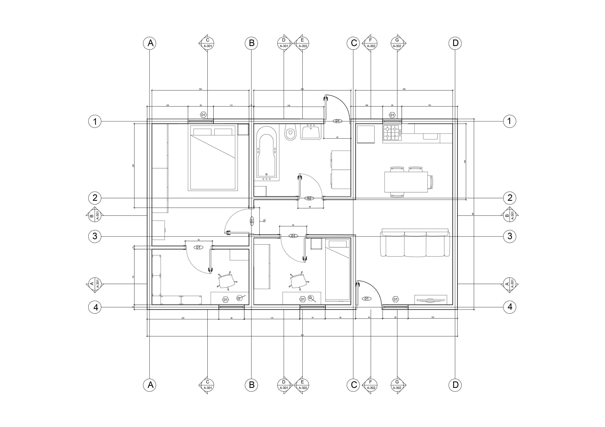
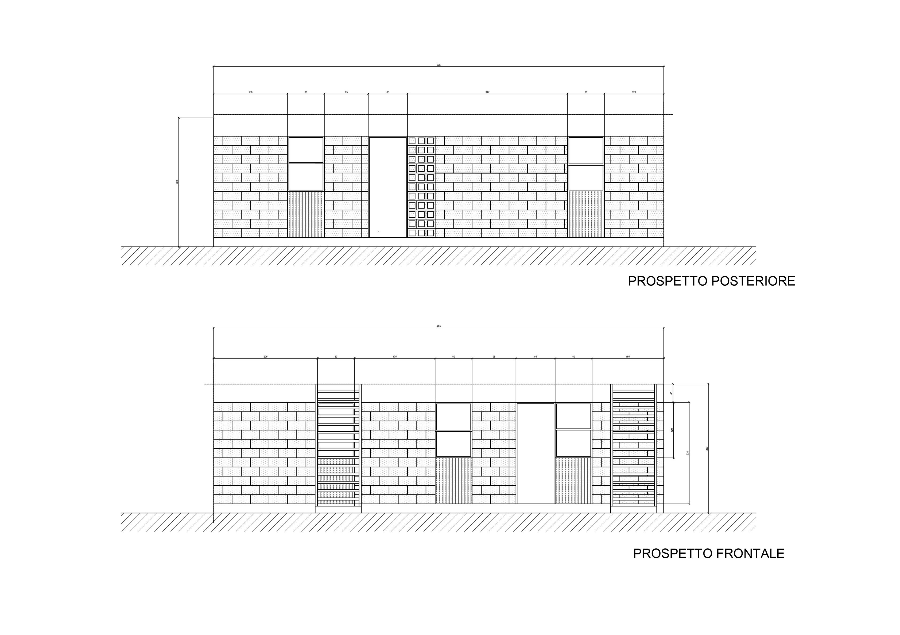
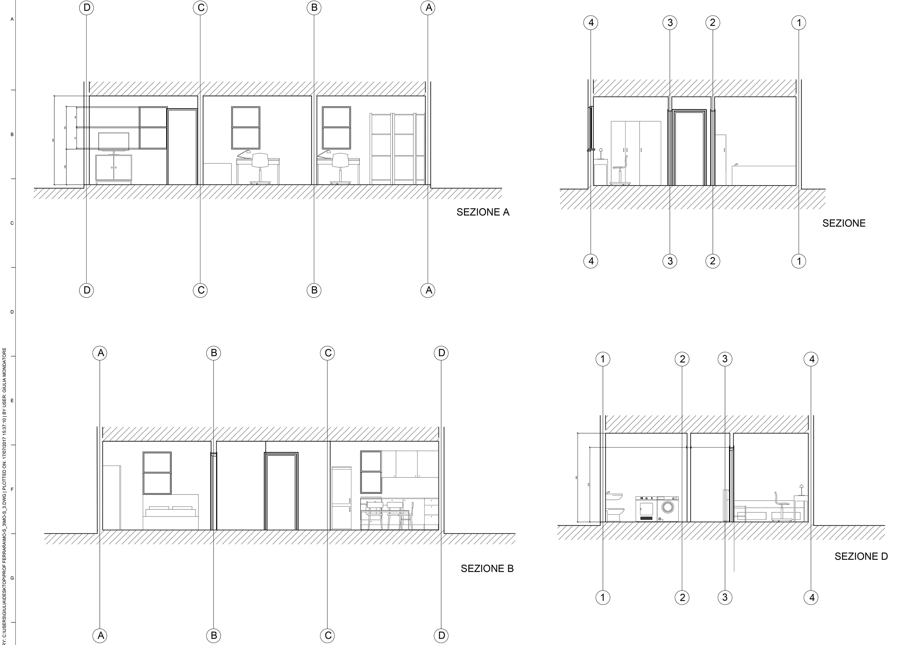
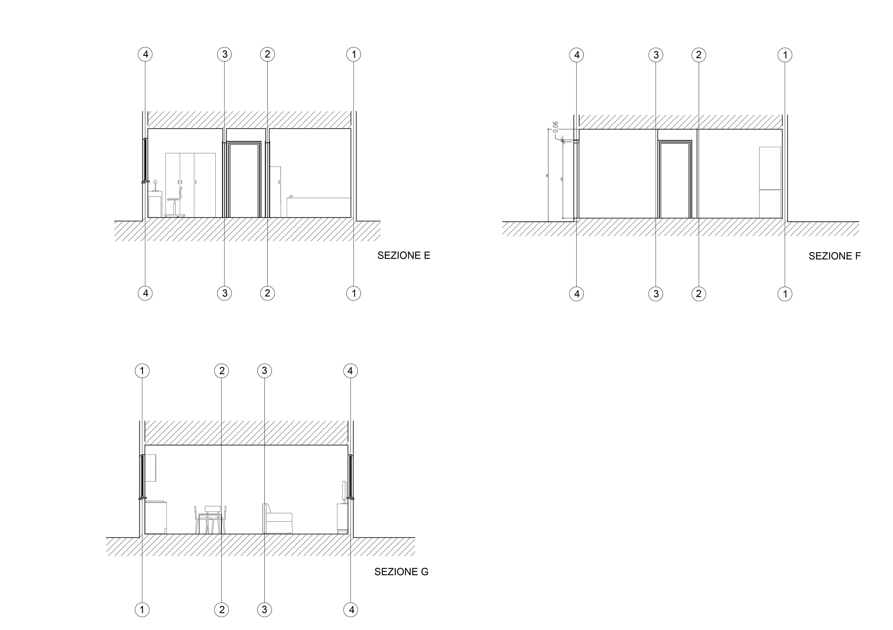

THE PROJECT
Our abitation in Monterrey needed some changes. We project the entrance in corrispondence of the living room, that is link to the kitchen by an on open space. On the left you can find a short aisle who brings you to the bathroom, the kid's room and at the end to the main bedroom. From the bedroom you can have access to the office.
Here there are plants, sections and prospects about our's Monterrey Simplex project.
   